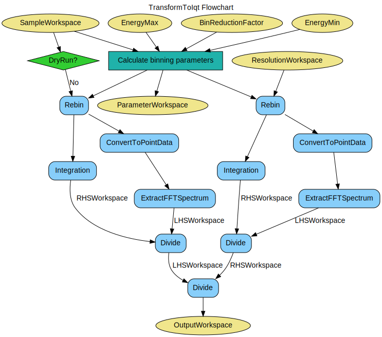

\(\renewcommand\AA{\unicode{x212B}}\)
TransformToIqt v1¶
{kind=link}
TransformToIqt dialog.¶
Summary¶
Transforms an inelastic reduction to I(Q, t)
Properties¶
Name |
Direction |
Type |
Default |
Description |
|---|---|---|---|---|
SampleWorkspace |
Input |
Mandatory |
Name for the sample workspace. |
|
ResolutionWorkspace |
Input |
Mandatory |
Name for the resolution workspace. |
|
EnergyMin |
Input |
number |
-0.5 |
Minimum energy for fit. |
EnergyMax |
Input |
number |
0.5 |
Maximum energy for fit. |
BinReductionFactor |
Input |
number |
10 |
Decrease total number of spectrum points by this ratio through merging of intensities from neighbouring bins. |
NumberOfIterations |
Input |
number |
50 |
Number of randomised simulations for monte-carlo error calculation. |
SeedValue |
Input |
number |
89631139 |
Seed for pseudo-random number generator in monte-carlo error calculation. |
ParameterWorkspace |
Output |
Table workspace for saving TransformToIqt properties |
||
OutputWorkspace |
Output |
Output workspace |
||
DryRun |
Input |
boolean |
False |
Only calculate and output the parameters |
CalculateErrors |
Input |
boolean |
True |
Calculate monte-carlo errors. |
Description¶
This algorithm transforms either a reduced (_red) or S(Q, w) (_sqw) workspace to a I(Q, t) workspace.
Theory¶
The measured spectrum \(I(Q, \omega)\) is proportional to the four dimensional convolution of the scattering law \(S(Q, \omega)\) with the resolution function \(R(Q, \omega)\) of the spectrometer via \(I(Q, \omega) = S(Q, \omega) \circledast R(Q, \omega)\), so \(S(Q, \omega)\) can be obtained, in principle, by a deconvolution in \(Q\) and \(\omega\). The method employed here is based on the Fourier Transform (FT) technique [6,7]. On Fourier transforming the equation becomes \(I(Q, t) = S(Q, t) x R(Q, t)\) where the convolution in \(\omega\)-space is replaced by a simple multiplication in \(t\)-space. The intermediate scattering law \(I(Q, t)\) is then obtained by simple division and the scattering law \(S(Q, \omega)\) itself can be obtained by back transformation. The latter however is full of pitfalls for the unwary. The advantage of this technique over that of a fitting procedure such as SWIFT is that a functional form for \(I(Q, t)\) does not have to be assumed. On IRIS the resolution function is close to a Lorentzian and the scattering law is often in the form of one or more Lorentzians. The FT of a Lorentzian is a decaying exponential, \(exp(-\alpha t)\) , so that plots of \(ln(I(Q, t))\) against t would be straight lines thus making interpretation easier.
In general, the origin in energy for the sample run and the resolution run need not necessarily be the same or indeed be exactly zero in the conversion of the RAW data from time-of-flight to energy transfer. This will depend, for example, on the sample and vanadium shapes and positions and whether the analyser temperature has changed between the runs. The procedure takes this into account automatically, without using an arbitrary fitting procedure, in the following way. From the general properties of the FT, the transform of an offset Lorentzian has the form \((cos(\omega_{0}t) + isin(\omega_{0}t))exp(-\Gamma t)\) , thus taking the modulus produces the exponential \(exp(-\Gamma t)\) which is the required function. If this is carried out for both sample and resolution, the difference in the energy origin is automatically removed. The results of this procedure should however be treated with some caution when applied to more complicated spectra in which it is possible for \(I(Q, t)\) to become negative, for example, when inelastic side peaks are comparable in height to the elastic peak.
The interpretation of the data must also take into account the propagation of statistical errors (counting statistics) in the measured data as discussed by Wild et al [1]. If the count in channel \(k\) is \(X_{k}\) , then \(X_{k}=<X_{k}>+\Delta X_{k}\) where \(<X_{k}>\) is the mean value and \(\Delta X_{k}\) the error. The standard deviation for channel \(k\) is \(\sigma k\) \(2=<\Delta X_{k}>2\) which is assumed to be given by \(\sigma k=<X_{k}>\). The FT of \(X_{k}\) is defined by \(X_{j}=<X_{j}>+\Delta X_{j}\) and the real and imaginary parts denoted by \(X_{j} I\) and \(X_{j} I\) respectively. The standard deviations on \(X_{j}\) are then given by \(\sigma 2(X_{j} R)=1/2 X0 R + 1/2 X2j R\) and \(\sigma 2(X_{j} I)=1/2 X0 I - 1/2 X2j I\).
Note that \(\sigma 2(X_{0} R) = X_{0} R\) and from the properties of FT \(X_{0} R = X_{k}\). Thus the standard deviation of the first coefficient of the FT is the square root of the integrated intensity of the spectrum. In practice, apart from the first few coefficients, the error is nearly constant and close to \(X_{0} R\). A further point to note is that the errors make the imaginary part of \(I(Q, t)\) non-zero and that, although these will be distributed about zero, on taking the modulus of \(I(Q, t)\), they become positive at all times and are distributed about a non-zero positive value. When \(I(Q, t)\) is plotted on a log-scale the size of the error bars increases with time (coefficient) and for the resolution will reach a point where the error on a coefficient is comparable to its value. This region must therefore be treated with caution. For a true deconvolution by back transforming, the data would be truncated to remove this poor region before back transforming. If the truncation is severe the back transform may contain added ripples, so an automatic back transform is not provided.
References¶
U P Wild, R Holzwarth & H P Good, Rev Sci Instr 48 1621 (1977)
Workflow¶
Usage¶
Example - TransformToIqt with IRIS data.
sample = Load('irs26176_graphite002_red.nxs')
can = Load('irs26173_graphite002_red.nxs')
params, iqt = TransformToIqt(SampleWorkspace=sample,
ResolutionWorkspace=can,
EnergyMin=-0.5,
EnergyMax=0.5,
BinReductionFactor=10)
print('Number of output bins: %d' % (params.cell('SampleOutputBins', 0)))
print('Resolution bins: %d' % (params.cell('ResolutionBins', 0)))
Output:
Number of output bins: 172
Resolution bins: 6
Categories: AlgorithmIndex | Workflow\Inelastic | Workflow\MIDAS
Source¶
Python: TransformToIqt.py